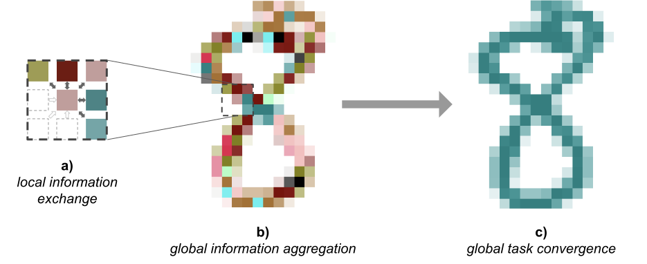
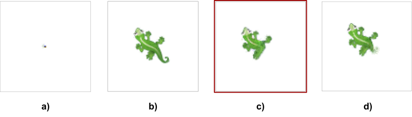
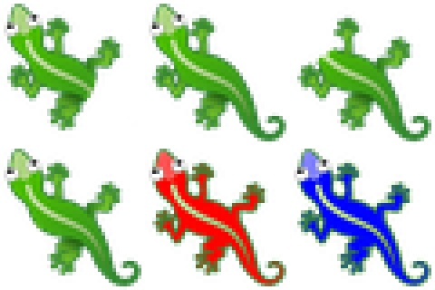

本文是 专题：可微分自组织系统 的一部分，该系列以实验性格式汇集了受邀的短文，探讨可微分自组织系统，并穿插来自邻近领域多位专家的批判性评论。
自组织纹理
本文在图表和演示中大量使用颜色。点击此处可调整调色板。
在复杂的系统中——无论是生物的、技术性的还是社会的——我们如何发现那些能以期望方式改变系统级行为的信号事件？即使我们已知支配这些复杂系统个体组件的规则，反问题（从期望行为反推系统设计）仍是生物医学、机器人学以及其他对社会重要领域前进道路上的核心障碍。
生物学正在从关注机制（系统运作需要什么）转向关注信息（什么算法足以实现自适应行为）。机器学习的进步代表了一个令人兴奋且尚未被充分开发的灵感和工具来源，可用于辅助生物科学研究。Growing Neural Cellular Automata [(Mordvintsev et al., 2020)] 和 Self-classifying MNIST Digits [(Randazzo et al., 2020)] 提出了神经元胞自动机（Neural CA）模型，并展示了如何以端到端、可微分的方式训练需要自组织的任务，例如图案生长和数字自分类。所得模型对各种扰动具有鲁棒性：生长型 CA 在受损时表现出再生能力；MNIST CA 能对底层数字的变化做出响应，并在必要时触发重新分类。这些计算框架为理解重要的生物现象提供了定量模型，例如将单个细胞的行为规则扩展为可靠的器官级解剖结构。后一种现象是一种解剖稳态，通过反馈回路实现，这些回路必须识别偏离正确目标形态的情况，并逐步减少解剖误差。
在这项工作中，我们训练对抗者，其目标是将 CA 重编程为执行不同于其训练目标的任务。为了理解哪些底层信号能改变我们 CA 的系统级行为，理解这些 CA 的构造方式以及局部信息与全局信息的所在位置非常重要。
神经元胞自动机的系统级行为受以下因素影响：
- 单个细胞的状态。状态存储的信息既用于细胞行为之间的多样化，也用于与邻近细胞的通信。
- 模型参数。这些参数描述了细胞的输入/输出行为，并由同一家族的每个细胞共享。模型参数可以看作系统的工作方式。
- 感知场。这是细胞感知其环境的方式。在 Neural CA 中，我们始终将感知场限制为八个最近邻居和细胞自身。细胞相互感知的方式在 Growing CA 和 MNIST CA 之间有所不同。Growing CA 的感知场是一组在训练和推理期间均固定的权重，而 MNIST CA 的感知场则是作为模型参数的一部分被学习得到的。
扰动其中任何一个组件都会导致系统级行为的改变。
我们将探索两种对抗攻击：1）向运行预训练模型的现有网格中注入少量对抗细胞；2）扰动网格上所有细胞的全局状态。
对于第一类对抗攻击，我们训练一个新的 CA 模型，当它被放置在运行前述文章中描述的原始模型之一的环境中时，能够劫持对抗 CA 和非对抗 CA 混合体的集体行为。这是一个向系统中注入具有不同模型参数的 CA 的例子。在生物学中，已知多种劫持形式，包括劫持遗传和生化信息流的病毒 [(Banerjee et al., 2020)]、接管生理控制机制的细菌 [(Tlaskalová-Hogenová et al., 2011)] 甚至整个身体的再生形态 [(Williams et al., 2020)]，以及调控宿主行为的真菌和弓形虫 [(Martinez et al., 2018)]。特别引人入胜的是发育生物学和癌症中许多非细胞自主信号的案例，表明某些细胞行为既能在局部也能在远距离显著改变宿主特性。例如，生物电异常的细胞可以在原本正常（无基因缺陷）的身体中触发转移转化 [(Lobikin et al., 2012)]，而对身体某一区域生物电状态的管理可以抑制另一侧的肿瘤发生 [(Chernet et al., 2014)]。类似地，一条腿的截肢损伤会引发对侧腿细胞离子特性的变化 [(Busse et al., 2018)]，而发育中大脑的大小在一定程度上由腹侧肠细胞的活动决定 [(Pai et al., 2015)]。所有这些现象都凸显了理解细胞群体如何做出集体决策，以及组织级决策如何被少量细胞活动所颠覆的重要性。为了推动再生医学在系统级结果自上而下控制方面的有意义进展，开发此类动态的定量模型至关重要，因为在细胞或分子水平进行微观管理是不可行的 [(Pezzulo et al., 2016)]。
第二类对抗攻击通过扰动细胞内部状态来与先前训练的生长型 CA 模型交互。我们对所有活细胞施加全局状态扰动。这可以看作抑制或增强状态值的组合，进而劫持细胞之间以及细胞自身状态内的正常通信。此类模型不仅代表了对自然界中对抗关系（如寄生和遗传、生理机制的进化军备竞赛）的思考方式，也为再生医学策略的发展提供了路线图。下一代生物医学将需要计算工具来推断可应用于生物系统的最小、最低努力的干预措施，以可预测的方式改变其大规模解剖和行为特性。
对抗 MNIST CA在 Notebook 中试用
回想一下，自分类 MNIST 数字任务是将 CA 细胞放置在平面上，形成 MNIST 数字的形状。然后这些细胞必须相互通信，以就它们形成的数字达成完全共识。

下面我们展示由 Self-classifying MNIST Digits 中训练的模型所做出的分类示例。
在这个实验中，目标是创建能够劫持细胞集体的分类共识、始终将其分类为“8”的对抗 CA。我们使用来自 [(Randazzo et al., 2020)] 的 CA 模型并冻结其参数。然后我们训练一个新的 CA，其模型架构与冻结模型完全相同，但随机初始化。训练机制也与自分类 MNIST 数字 CA 非常接近。有三个重要区别：
- 无论实际数字是什么，我们都认为正确的分类始终是 8。
- 对于每个批次和每个像素，CA 被随机选择为预训练模型或新的对抗模型。对抗 CA 使用 10% 的时间，其余时间使用预训练的、冻结的模型。
- 仅训练对抗 CA 的参数，预训练模型的参数保持冻结。
这里定义的对抗攻击仅修改了整个系统的一小部分百分比，但目标是传播影响所有活细胞的信号。因此，这些对抗者必须以某种方式学会传递欺骗性信息，导致邻居产生错误分类，并进一步通过“不知情”细胞 cascades 传播欺骗性信息。不知情细胞的参数无法改变，因此对抗者的唯一攻击手段是引起细胞状态的变化。细胞状态负责通信和多样化。
该任务优化起来非常简单，仅需 2000 个训练步骤即可收敛（而构建原始 MNIST CA 需要两个数量级更多的步骤）。通过可视化移除对抗者后发生的情况，我们观察到对抗者必须不断与其非对抗邻居通信，以保持它们相信恶意分类。虽然某些数字在移除对抗者后无法恢复，但大多数会自我纠正为正确的分类。下面我们展示在 200 步引入对抗者并在额外 200 步后移除它们的示例。
虽然我们以 10% 对 90% 的对抗与非对抗细胞比例训练对抗者，但我们观察到往往显著更少的对抗者就能成功实现欺骗。下面我们用仅 1% 的细胞作为对抗者来评估实验。
我们创建了一个演示游乐场，读者可以在其中绘制数字并以手术般的精确度放置对抗者。我们鼓励读者与演示互动，以体会非对抗细胞有多容易被引导向错误分类。
对生长型 CA 的对抗注入在 Notebook 中试用
自然接下来的问题是，这些对抗攻击是否也对 Growing CA 有效。Growing CA 的目标是从单个细胞生长出复杂图像，并且其结果在时间上持久且对扰动具有鲁棒性。在本文中，我们聚焦于 Growing CA 中的蜥蜴图案模型。
目标是让一些对抗细胞改变所有细胞的全局配置。我们选择了两个新的目标，希望对抗细胞尝试将蜥蜴变形为：无尾蜥蜴和红色蜥蜴。
这些目标具有不同特性：
- 红色蜥蜴：将绿色的蜥蜴转换为红色将展示细胞集体行为的全局变化。这种行为在原始模型观察到的动态中并不存在。因此，对抗者被赋予的任务是欺骗其他细胞去做它们以前从未做过的事情（像以前一样创建蜥蜴形状，但现在染成红色）。
- 无尾蜥蜴：拥有断尾是一种更局部的变化，只需要欺骗一些细胞以错误方式行为：尾巴根部的细胞需要被说服它们构成了蜥蜴的边缘或轮廓，而不是像以前那样继续生长尾巴。
与前一个实验一样，我们的对抗者只能间接影响原始细胞的状态。
我们首先针对无尾目标训练对抗者，使任意给定细胞有 10% 的概率成为对抗者。我们禁止细胞在目标图案之外成为对抗者；即尾巴中不包含对抗者。
上面的视频展示了同一模型的六个不同实例，对抗者的随机放置各不相同。结果差异很大：有时对抗者成功移除尾巴，有时尾巴仅缩小但未完全移除，其他时候图案变得不稳定。训练这些对抗者需要更多梯度步骤才能收敛，而且收敛得到的图案质量明显不如对抗 MNIST CA 实验中达到的效果。
红色蜥蜴图案的表现更差。仅使用 10% 的对抗细胞会导致完全失败：原始细胞不受对抗者影响。有些读者可能会怀疑原始预训练 CA 是否具备产生红色输出的必要技能或“子程序”，因为原始目标中没有红色区域，并可能怀疑这原本就是不可能的任务。因此，我们增加了对抗细胞的比例，直到找到成功的对抗 CA（如果存在的话）。
在上面的视频中我们可以看到，至少在形态发生的最初阶段，60% 的对抗者能够将蜥蜴染成红色。请特别注意“第 500 步”[1]，在那里我们隐藏对抗细胞并仅显示原始细胞。我们看到少数原始细胞被染成红色。这证明对抗者成功引导相邻细胞在需要的地方将自身染成红色。
然而，当迭代时间超过训练期间所见的长度时，该模型非常不稳定。此外，学习到的对抗攻击依赖于大多数细胞是对抗者。例如，当使用 20-30% 数量级的较少对抗者时，配置是不稳定的。
与前一个实验的结果相比，Growing CA 模型对对抗扰动的抵抗力强于 MNIST CA。这两个模型之间一个显著差异是，MNIST CA 细胞必须始终准备好并能够根据通过多个邻居传播的信息改变意见（分类）。这是该模型的必要要求，因为底层数字随时可能改变，但大多数细胞不会观察到其邻居放置的任何变化。例如，想象一下一个“1”变成“7”、两者下笔画完全重叠的情况。从数字下笔画细胞的角度来看，没有变化，但形成的数字现在是“7”。因此我们假设 MNIST CA 比 Growing CA 更依赖且“信任”连续的长距离通信，而在 Growing CA 中，细胞从不需要重新配置自身来生成与之前不同的东西。
我们怀疑，在训练期间学习了多种目标图案的更通用 Growing CA 更可能容易受到对抗攻击。
扰动生长型 CA 的状态在 Notebook 中试用
我们观察到，通过在细胞集体内部放置对抗细胞来欺骗 Growing CA 改变其形态是困难的。这些对抗者必须设计复杂的局部行为，以导致附近的非对抗细胞，并最终在整个图像全局范围内，改变它们的整体形态。
在本节中，我们探索另一种方法：在不改变任何细胞模型参数的情况下扰动所有细胞的全局状态。
与之前一样，我们的实验基于训练用于生成蜥蜴的 Growing CA 模型。每个 Growing CA 细胞都有一个包含 16 个元素的内部状态向量。其中一些是表型元素（RGBA 状态），其余 12 个用于任意目的，用于存储和传递信息。我们可以扰动这些细胞的状态以特定方式劫持整个系统（发现此类扰动策略是生物医学和合成形态学的关键目标）。进行状态扰动的方法多种多样。我们将聚焦于全局状态扰动，定义为在每个时间步对每个活细胞施加的扰动（类似于“系统性”生物医学干预，即给予整个有机体，例如口服化学物质，而不是高度局部的递送系统）。新的目标是发现某种全局状态扰动，能产生稳定的新图案。

我们展示了 6 个目标图案：前一个实验中的无尾和红色蜥蜴，加上蓝色蜥蜴以及带有各种断肢和断头的蜥蜴。

我们决定尝试一种简单的全局状态扰动：在每一步对每个活细胞应用对称的 16\times16 矩阵乘法 A[2]。为了解释我们选择它的原因，更简单的“状态加法”突变（仅由向每个状态添加一个向量组成的突变）将是不够的，因为我们模型中状态的值是无界的，而我们通常希望通过将其设置为零来抑制某些东西。后者用常量状态加法一般不可能实现，因为常量加法或减法通常会导致无穷大，除非在某些幸运的情况下，细胞的自然残差更新会与常量加法在恰好状态值为零时抵消。然而，矩阵乘法有可能放大/抑制状态中元素的组合：反复将状态值乘以小于 1 的常量可以轻松将状态值抑制为零。我们将矩阵约束为对称的，原因将在下一节中变得清晰。
我们用单位矩阵 I 初始化 A，并像训练原始 Growing CA 一样训练 A，但有以下不同：
- 我们在每一步执行如上所述的全局状态扰动，使用 A。
- 底层的 CA 参数被冻结，我们仅训练 A。
- 我们将初始图像配置集视为种子状态和完全生长蜥蜴的状态（而 Growing CA 文章中初始配置仅包含种子状态）。
上面的视频显示模型成功发现了能够将目标图案更改为期望变体的全局状态扰动。我们展示了当我们在第 500 步到第 1000 步停止扰动状态（训练外情况）然后重新施加突变时发生的情况。这证明了我们的扰动既能在从种子开始时，也能在从完全生长图案开始时实现期望结果。此外，它还证明了原始 CA 在这些状态扰动消失后很容易恢复。最后这个结果或许并不令人意外，因为生长型 CA 模型总体上非常鲁棒。
并非所有扰动都同样有效。特别是无头扰动最不成功，因为它导致整个蜥蜴图案的其他细节（如背部的白色着色）丢失。我们假设，由于扰动的简单性，我们训练机制能找到的最佳扰动是抑制一个同时包含头部形态和白色着色的“结构”。这可能与生物器官的分化和区分概念有关。在经验尝试之前预测哪些类型的扰动会更难或不可能实现，仍然是生物学中的开放研究问题。另一方面，此类合成分析的变体可能有助于定义生物和合成系统中的更高阶结构。
扰动的方向性和可组合性
我们选择使用对称矩阵来表示全局状态扰动，是出于对可组合性的期望。每个复杂的对称矩阵 A 都可以按如下方式对角化：
A = Q \Lambda Q^\intercal
其中 \Lambda 是对角特征值矩阵，Q 是其特征向量的酉矩阵。另一种看法是应用基变换，将每个分量按特征值比例缩放，然后变回原始基。这也应该更清晰地直观理解抑制或放大状态组合的容易程度。此外，我们现在可以推断如果所有特征值都为 1 会发生什么。在那种情况下，我们自然会得到 Q I Q^\intercal = I，结果是无操作（无变化）：蜥蜴会像没有执行扰动一样生长。我们现在可以将 Q \Lambda Q^\intercal = Q (D + I) Q^\intercal 分解为 D 是“特征值空间”中的扰动方向（\Lambda - I）。假设我们使用系数 k 来缩放 D：A_k = Q (kD + I) Q^\intercal。如果 k=1，我们得到原始扰动 A；当 k=0 时，我们得到无操作 I。自然，一个问题是是否可以探索 k 的其他值并发现有意义的扰动。由于
A_k = Q (kD + I) Q^\intercal = k A + (1-k) I
我们甚至不需要计算特征值和特征向量，只需相应缩放 A 和 I 即可。
那么让我们以无尾扰动为例，看看当我们改变 k 时会发生什么：
当我们将 k=1 改为 k=0 时，可以观察到尾巴变得更完整。令人惊讶的是，如果我们使 k 为负，蜥蜴会长出更长的尾巴。不幸的是，我们离得越远，系统就越不稳定，最终蜥蜴图案以无界方式生长。这种行为很可能源于施加在状态上的扰动也会影响系统的稳态调节，使某些细胞死亡或以不同于之前的方式生长，从而产生类似于生物系统中“癌症”的行为。
我们能否同时执行多个单独训练的扰动？
假设我们有两个扰动 A 和 B，且它们的特征向量相同（或更现实地说，足够相似）。那么，A_k = Q (k_A D_A + I) Q^\intercal 和 B_k = Q (k_B D_B + I) Q^\intercal。
在那种情况下，
comb(A_k, B_k) = Q(k_A D_A + k_B D_B + I)Q^\intercal = k_A A + k_B B + (1 - k_A - k_B)I
将产生有意义的结果。至少，如果 A = B，设置 k_A = k_B = 0.5 将产生完全相同的扰动。
我们注意到 D_A 和 D_B 实际上是来自单位矩阵 I 的位移，我们通过经验观察到，对于任意训练得到的位移 D_A，当 0 \leq k_A \leq 1 时加上 k_A D_A 会产生稳定的扰动。然后我们假设，只要我们有两个正方向 k 为 k_A + k_B \leq 1 的扰动，这可能产生稳定的扰动。对此的直观理解是用方向系数对稳定扰动进行插值。
然而，在实践中，特征向量也不同，因此组合的结果很可能随着各自特征向量基的差异增大而变差。
下面，我们在保持两者之和为 1 的情况下，对两种扰动（无尾和无腿蜥蜴）的方向系数进行插值。
虽然它在很大程度上达到了我们预期的效果，但我们观察到一些意外效应，例如整个图案开始在网格中垂直移动。其他扰动组合也会产生类似结果。如果我们取消 k 之和等于 1 的限制，而是将两个扰动全部相加，会发生什么？我们知道如果两个扰动相同，我们会离单位扰动两倍远，一般来说我们预期这些扰动的方差会增加。这实际上意味着越来越远离训练期间发现的稳定扰动。随着 k 之和的增加，我们预期会出现更多可能破坏 CA 的意外效应。
下面，我们展示当我们以最大程度组合无尾和无腿蜥蜴扰动时发生的情况。请注意，当我们将两个 k 都设置为 1 时，得到的扰动等于两个扰动之和减去单位矩阵。
令人惊讶的是，得到的图案几乎符合预期。然而，它也受到了在插值 k 时观察到的图案垂直移动的影响。
这个框架可以推广到任意数量的扰动。下面，我们创建了一个小型游乐场，允许读者输入他们想要的组合。根据经验，我们惊讶于其中有多少组合产生了预期扰动，而且从定性上看，将 k 限制为 1 通常会产生更稳定的图案。我们还观察到探索负 k 值通常更不稳定。
相关工作
这项工作受到生成对抗网络（GANs）[(Goodfellow et al., 2014)] 的启发。虽然 GAN 通常共同训练成对模型，但在这项工作中我们冻结了原始 CA 并仅训练对抗者。这种设置在很大程度上受到开创性工作《神经网络的对抗性重编程》[(Elsayed et al., 2018)] 的启发。
本文中执行的状态扰动可以看作有针对性的潜在状态操纵。Word2vec [(Mikolov et al., 2013)] 展示了潜在向量表示如何具有可组合性质，而 Fader Networks [(Lample et al., 2018)] 为图像处理展示了类似行为。这些工作及其相关研究都对我们具有启发意义。
影响力最大化
对抗元胞自动机与影响力最大化领域有相似之处。影响力最大化涉及确定要影响的最佳节点，以最大化对整个图（通常是社交图）的影响力，其性质是节点可以反过来影响它们的邻居。此类模型被用于建模涉及图中信息传播的各种现实世界应用。[(Kempe et al., 2003)] [(Shakarian et al., 2015)] [(Banerjee et al., 2018)] 一个常见设置是图中每个顶点具有二元状态，该状态仅当其足够比例的邻居状态切换时才会改变。此类模型的例子包括社交影响力最大化（在人群网络中最大限度传播一个想法）、传染爆发建模 [(Iacopini et al., 2019)]（通常是为了最小化疾病在人群网络中的传播）和级联建模 [(Kleinberg, 2007)]（当对系统的微小扰动带来更大的“相变”时）。在撰写本文时，例如，传染最小化是一个特别令人感兴趣的模型。NCA 是一个图——每个细胞是一个顶点，并与其八个邻居有边，通过这些边可以传递信息。这个图和消息结构比影响力最大化研究中典型图要复杂得多，因为 NCA 细胞传递向量值消息，并对其内部状态有复杂的更新规则，而影响力最大化研究中的图通常由更简单的二元细胞状态和确定节点是否切换状态的边上的阈值函数组成。尽管如此，该领域的许多概念仍可应用并且值得关注。
例如，在这项工作中，我们假设我们的对抗者可以被放置在结构的任何位置以实现期望行为。影响力最大化问题中一个常见的研究焦点是决定图中哪些节点会产生对图的最大影响力，称为目标集选择 [(Chen, 2009)]。这个问题并不总是易于处理，通常是 NP-hard 的，解决方案经常涉及模拟。未来关于对抗 NCA 的工作可能涉及应用来自影响力最大化的技术，以找到对抗细胞的最优放置位置。
讨论
本文展示了针对 Neural CA 的两种不同类型的对抗攻击。
在预训练的自分类 MNIST CA 中注入对抗 CA，展示了高度依赖彼此信息传递的现有细胞系统很容易被欺骗性信号所左右。生物系统经常面临这个问题，它们会受到与其竞争的寄生虫和其他生物圈代理对行为、生理和形态调节机制的劫持。计算机技术这一领域的未来工作可以从生物通信机制的研究中受益，以理解细胞如何最大化实现自适应结果所需的细胞间和细胞内消息的可靠性和保真度。
对抗注入攻击对 Growing CA 的效果要差得多，并导致总体不稳定的 CA。这种动态对于控制机制的规模化（群机器人和嵌套架构）也很重要：“多细胞性”（将子代理联合起来形成更大系统 [(Levin, 2019)]）的关键一步是信息融合，这使得难以识别信号的来源和记忆痕迹。一个优化的架构需要在验证控制消息的需求与子单元灵活合并（这会抹除关于信息信号特定来源的元数据）的可能性之间取得平衡。同样，成功响应新环境挑战的能力是自主人工系统的重要目标，它可以从生物学中引入策略，这些策略优化了在维持特定信号集与足够灵活以在需要时建立新信号体制之间的权衡。
对 Growing CA 的全局状态扰动实验表明，仍然可能将这些 CA 劫持到训练外的稳定配置，并且这类攻击在某种程度上是可组合的，类似于自然语言处理和计算机视觉领域中嵌入空间可操纵的方式 [(Mikolov et al., 2013; Lample et al., 2018)]。然而，该实验未能发现扰动解除后仍能持久的训练外稳定配置。我们假设这部分是由于预训练 CA 的再生能力，并且其他模型可能更难以从任意扰动中恢复。